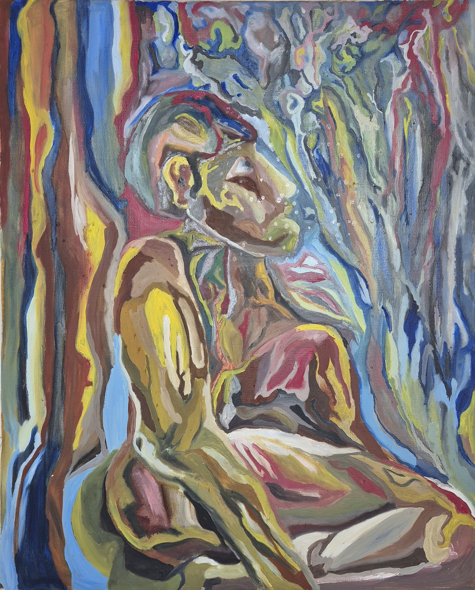
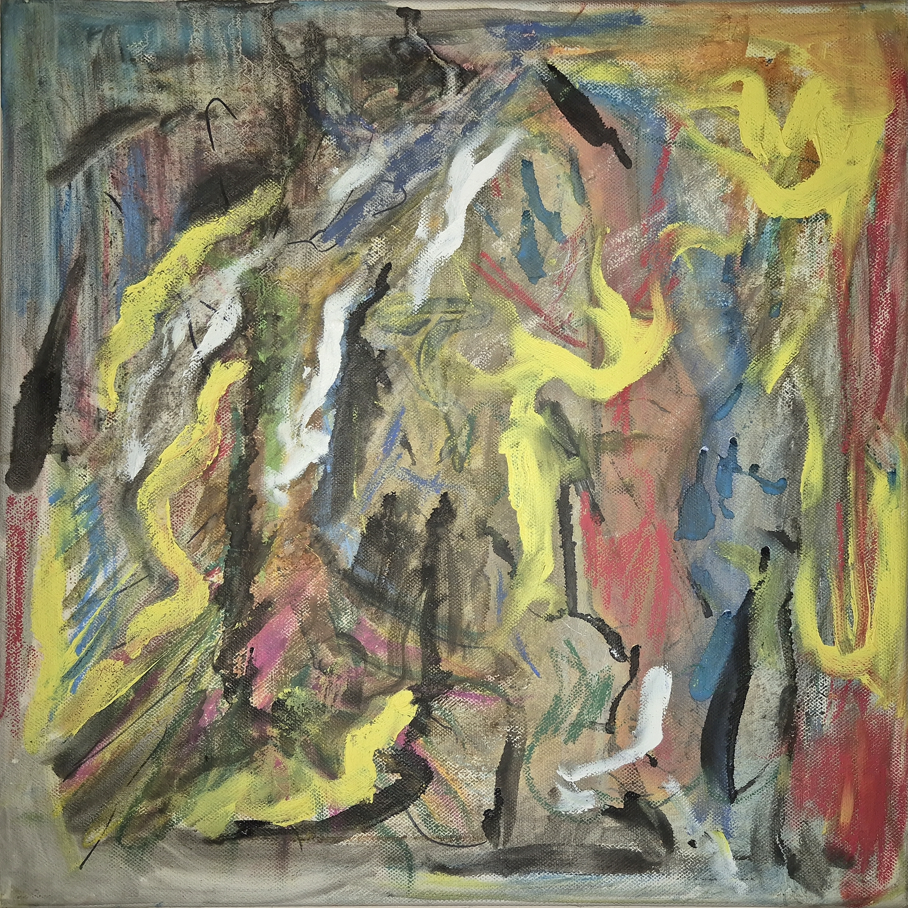
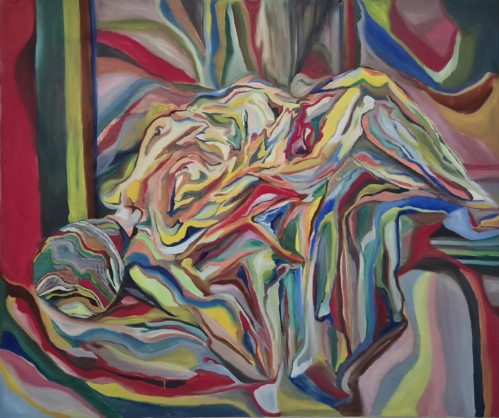
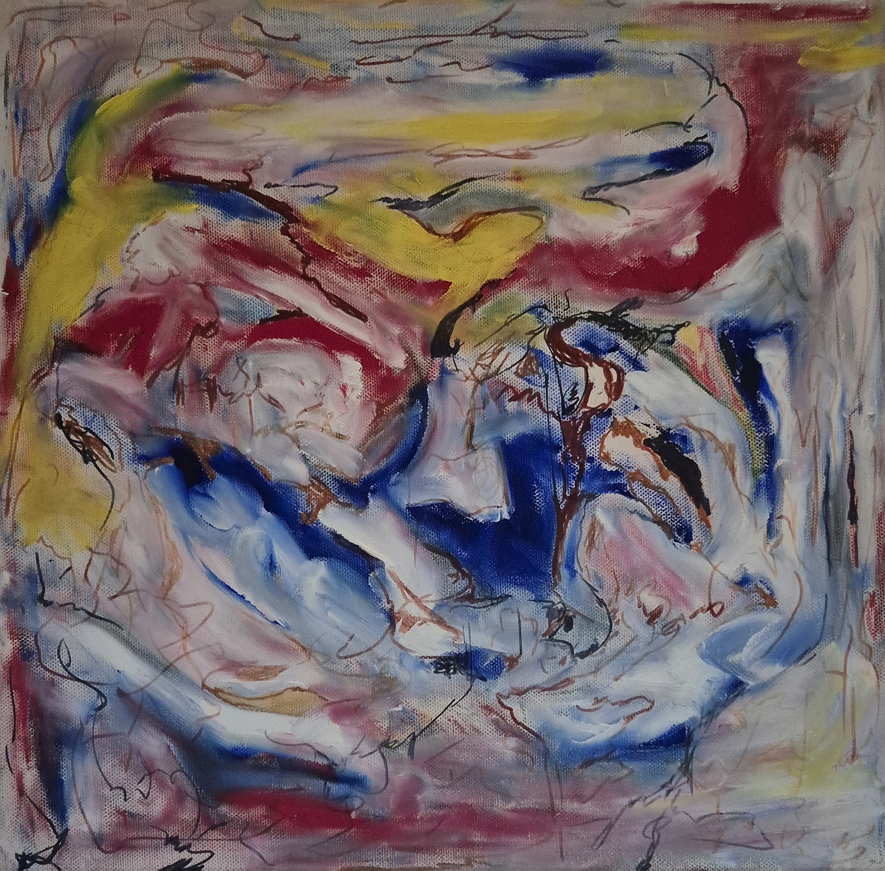
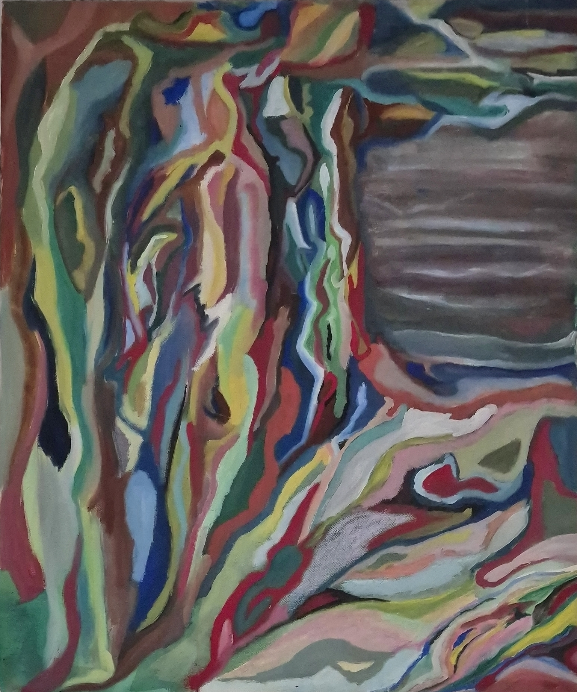

Featured Collection

Adam - The First Solitude
Oil on Canvas | 80 × 120 cm
A meditation on origin and self-awareness. Adam stands at the threshold of existence, confronting the silence and wonder of being the first human presence.

Between Fire and Light
Oil on Canvas | 40 × 40 cm
A dynamic exploration of tension and transformation. Powerful gestures and luminous colors create a landscape of uncertainty, movement, and growth.

Dina: Symphony of Becoming
Oil on Canvas | 100 × 120 cm
Explores the biblical figure Dinah as a symbol of resilience, transformation, and renewal. Through vibrant colors and expressive forms, the painting transcends narrative illustration, inviting viewers to reflect on identity, memory, and the enduring strength of the human spirit.

Creation of Color
Oil on Canvas | 40 × 40 cm
Color becomes a living force of emotion, memory, and perception, capturing the moment when imagination begins to take form.

Whispers of Eden
Oil on Canvas | 50 × 70 cm
Through luminous greens, flowing contours, and expressive gestures, Whispers of Eden evokes an imagined landscape where memory, nature, and imagination coexist. The work reflects the delicate balance between harmony and transformation.

Rooted in Light
Oil on Canvas | 50 × 70 cm
Through interwoven ribbons of color and fluid contours, Rooted in Light explores the profound unity between humanity and nature. The standing figure appears to emerge from the landscape itself, dissolving the boundaries between body, memory, and place. Layers of vibrant greens, blues, reds, and ochres create a visual rhythm that speaks of growth, resilience, and the enduring search for belonging.